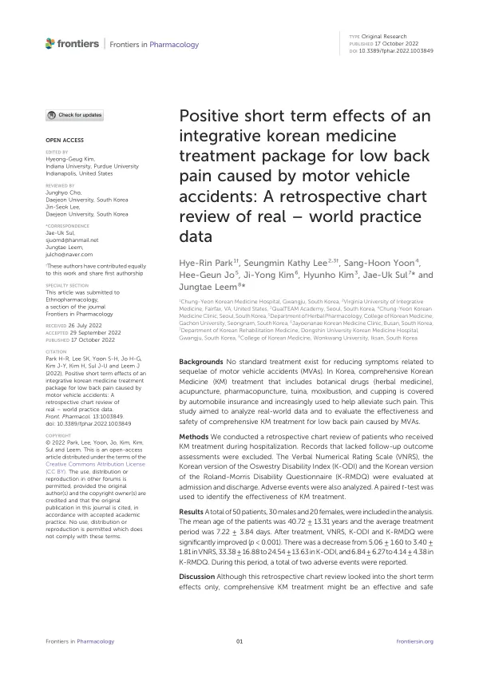

Positive short term effects of an integrative korean medicine treatment package for low back pain caused by motor vehicle accidents: A retrospective chart review of real – world practice data
Park HR, Lee SK, Yoon SH, Jo HG, Kim JY, Kim H, Sul JU, Leem J
Frontiers in Pharmacology 13:1003849

첫 장 · 오픈액세스First page · open access
논문 소개Summary
교통사고 후유증에는 표준치료라 할 만한 것이 없습니다. 한국에서는 한약, 침, 약침, 추나, 뜸, 부항을 아우르는 한의 통합치료가 자동차보험으로 보장되어 널리 쓰이고 있습니다. 널리 쓰이는데 그 결과를 정리한 자료가 부족하다면 그것 자체가 문제입니다. 이 연구는 실제 진료기록을 모아 교통사고로 인한 요통에 대한 한의 통합치료의 효과와 안전성을 살폈습니다.
입원해서 한의 치료를 받은 환자의 진료기록을 후향적으로 검토했고, 추적 평가가 없는 기록은 제외했습니다. 입원 시점과 퇴원 시점에 통증은 언어평가척도로, 기능장애는 한국어판 오스웨스트리 장애지수와 한국어판 롤랜드-모리스 장애설문으로 평가했습니다. 이상반응도 함께 분석했으며 대응표본 t 검정을 썼습니다.
최종 분석에는 50명이 들어갔습니다. 남성 30명, 여성 20명이고 평균 나이는 40.72세, 평균 치료 기간은 7.22일이었습니다. 치료 뒤 세 지표가 모두 유의하게 좋아졌습니다(p<0.001). 통증은 5.06에서 3.40으로, 오스웨스트리 장애지수는 33.38에서 24.54로, 롤랜드-모리스 장애설문은 6.84에서 4.14로 줄었습니다.
숫자를 읽을 때 짚어야 할 것이 있습니다. 평균 7일 남짓의 입원 기간 동안 나타난 변화이므로 이 연구가 보여 주는 것은 단기 효과입니다. 교통사고 후유증에서 정작 알고 싶은 것은 몇 달 뒤에 어떠한지인데 그것은 이 자료에 없습니다. 제목에 단기 효과라고 못 박은 이유가 여기 있습니다.
한계는 더 있습니다. 대조군이 없으므로 좋아진 것이 치료 덕분인지 시간이 지나 저절로 나아진 것인지 가릴 수 없습니다. 급성 요통은 상당 부분 자연 경과로 호전됩니다. 추적 평가가 없는 기록을 뺐으므로 경과가 나빴던 환자가 빠졌을 가능성도 있습니다. 그럼에도 자동차보험으로 널리 쓰이는 치료의 실제 결과를 처음으로 수치화했다는 데 뜻이 있습니다.
There is no standard treatment for the sequelae of motor vehicle accidents. In Korea, comprehensive Korean medicine care — herbal medicine, acupuncture, pharmacopuncture, tuina, moxibustion and cupping — is covered by automobile insurance and widely used. That something so widely used lacks documented outcomes is itself a problem. This study examined real-world records to assess the effectiveness and safety of comprehensive Korean medicine treatment for low back pain after motor vehicle accidents.
Records of inpatients receiving Korean medicine treatment were reviewed retrospectively, excluding those without follow-up outcome assessment. Pain was assessed by Verbal Numerical Rating Scale and functional disability by the Korean versions of the Oswestry Disability Index and the Roland-Morris Disability Questionnaire, at admission and discharge. Adverse events were analysed and a paired t-test applied.
Fifty patients entered the analysis — 30 men and 20 women, mean age 40.72 years, mean treatment period 7.22 days. All three measures improved significantly after treatment (p < 0.001): pain from 5.06 to 3.40, Oswestry Disability Index from 33.38 to 24.54, and Roland-Morris Disability Questionnaire from 6.84 to 4.14.
One point deserves emphasis in reading these figures. The changes occurred over an inpatient stay of roughly seven days, so what the study shows is a short-term effect. What one most wants to know about accident sequelae is the state some months later, and that is absent from this data — hence the explicit "short term" in the title.
Further limitations apply. Without a control group, improvement cannot be separated from natural recovery, and acute low back pain resolves substantially on its own. Excluding records lacking follow-up assessment may also have removed patients who did poorly. Even so, the study puts the first figures to the actual outcomes of a treatment widely delivered under automobile insurance.
인용Cite
Park HR, Lee SK, Yoon SH, Jo HG, Kim JY, Kim H, Sul JU, Leem J. Positive short term effects of an integrative korean medicine treatment package for low back pain caused by motor vehicle accidents: A retrospective chart review of real – world practice data. Frontiers in Pharmacology. 2022;13:1003849. doi:10.3389/fphar.2022.1003849